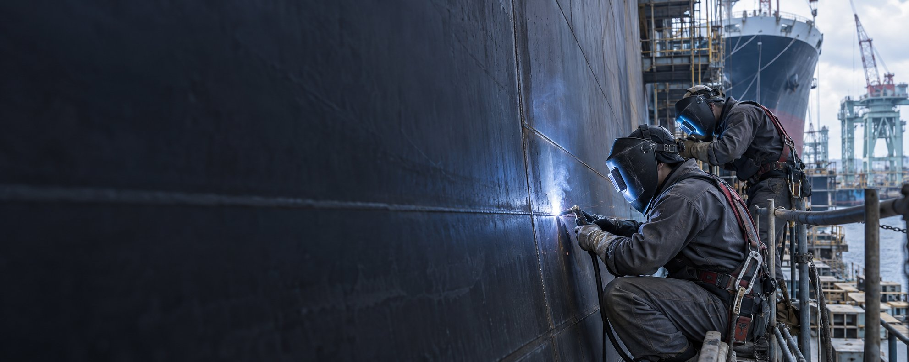
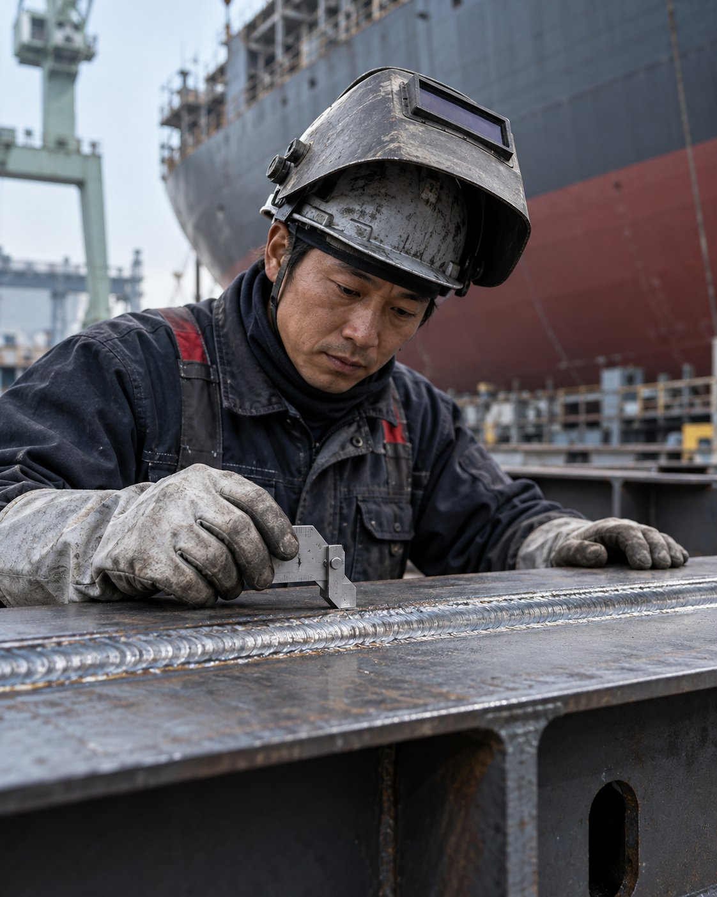
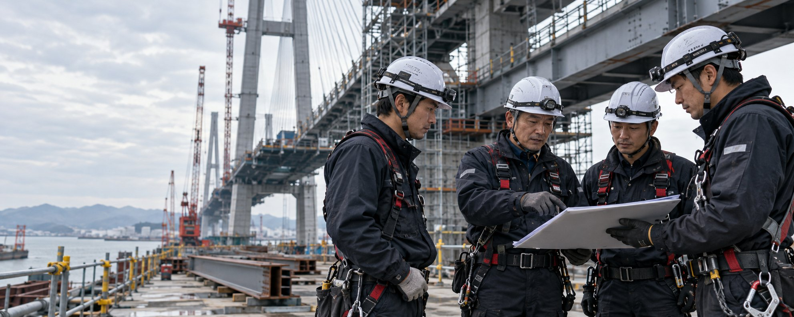

急な増員が必要
工程変更や繁忙期により、経験ある溶接技術者をすぐに確保したい。
溶接のプロフェッショナル／川西工業
橋梁、造船、大型構造物。
熟練の技術者が現場へ赴き、品質と工程を守り抜く。
現場溶接ソリューション
こんな現場の課題、
抱えていませんか。
工程を止めないために必要なのは、単なる「人数」ではありません。現場を理解し、自ら動ける技術者です。
工程変更や繁忙期により、経験ある溶接技術者をすぐに確保したい。
施工条件に合う資格や、大型構造物での現場経験を持つ人材が足りない。
安全・品質の基準を理解し、周囲と連携できるチームに任せたい。
技術者が動けば、
プロジェクトが前へ進む。
川西工業は、溶接技術を必要とする建設・製造現場へ、経験豊富な技術者チームを送り出すプロフェッショナル集団です。
現場ごとに異なる条件や工程を正確に理解し、お客様のチームの一員として、安全・品質・納期に責任を持って施工します。
※掲載内容・数値は現在仮のものです。
溶接現場での経験
年間対応プロジェクト
工期内完了率
人材を送るだけではなく、現場に機能するチームをつくる。それが川西工業の考える技術支援です。


施工現場／01
構造物の規模や環境を問わず、必要な人数・技術・期間に合わせて柔軟なチームを編成します。
橋梁建設
造船
プラント・鉄骨
安全。
品質。
信頼。

現場ルールの遵守と日々の危険予知活動を徹底。技術者一人ひとりが安全への高い意識を持ちます。
必要な資格・技量を持つ人材を適切に配置し、施工条件に合わせた確実な溶接を行います。
挨拶、報告、連絡、相談を大切にし、お客様や協力会社との連携を円滑にします。
工事内容・場所・期間・必要人数などをお聞かせください。
必要資格や施工条件、現場ルールを細かく確認します。
条件に適した技術者を選定し、体制と工程をご提案します。
安全教育を経て現場へ。責任を持って施工を進めます。
人と技術で、
日本のものづくりを支える。
お問い合わせ
工事の規模や期間が未確定でも構いません。
担当者が内容を伺い、最適な体制をご提案します。